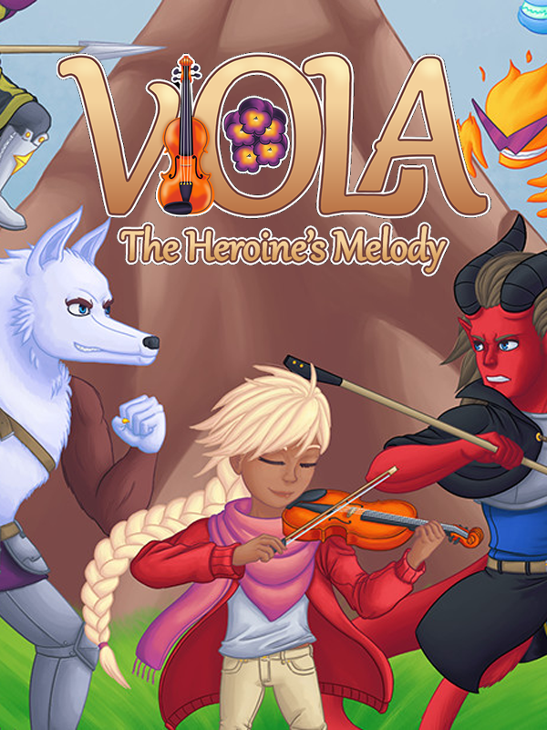

Viola: The Heroine's Melody
Viola: The Heroine's Melody
Details
|  | |
| Playtime | 2h 15m 0s |
| Last Activity | 2021-02-17 23:52:01 |
| Added | 2023-08-11 0:29:07 |
| Modified | 2025-10-02 9:45:36 |
| Completion Status | Completed |
| Library | Steam |
| Source | Steam |
| Platform | PC (Windows) |
| Release Date | 2020-07-23 |
| Community Score | 70 |
| Critic Score | |
| User Score | |
| Genre | Adventure Indie Platform Role-playing (RPG) |
| Developer | Jelle van Doorne |
| Publisher | Jelle van Doorne |
| Feature | Single Player |
| Links | Steam Official Website Twitch |
| Tag | 2D 2D Platformer Action Adventure Cute Family Friendly Female Protagonist Funny Indie JRPG LGBTQ+ Pixel Graphics Platformer Rhythm RPG Side Scroller Singleplayer Story Rich Tactical RPG Turn-Based Combat |
Description
After failing at violin practice for the hundredth time, Viola gets trapped inside her instrument's fantastical world. She's joined by a set of strange, colorful friends, as she journeys through the lands of magic, monsters and music... Searching for her way back home.


Viola: The Heroine's Melody pulls inspiration from many classic JRPGs. Lufia, the Mario & Luigi series, Final Fantasy, and even modern indie takes on the genre such as Undertale and Lisa. Turn-based battles, a ton of recruitable characters, and a personal story to sink your teeth into: Viola has all of this and more. However, Viola is not a passive RPG. Attacks require the player to time their button taps, and to unleash spells you'll have to follow a series of rhythm game-esque inputs.

On top of being an RPG, Viola: The Heroine's Melody is a side-scrolling platformer! With wall jumps and triple jumps, springs and cannons, you can explore each level and uncover every little secret. Find more potions, or gems to equip and customize each character's stats! And don't worry about random encounters: each monster is visible in the level. Don't feel like fighting? Just jump around and find another path!

Music is key to Viola. Every character in your party has their own instrument, and they'll eagerly play along with the songs you learn along your journey. All the songs have their own magical effect, like summoning a bird, creating a magical campfire, unlocking secret pathways... If you've ever played a Zelda game, you'll feel right at home.

Viola: The Heroine's Melody is about Viola's journey. It's one of strange characters, powerful monsters, fantastical locations and plenty of laughs. But Viola's journey isn't just about going home: it's also about learning. That it's okay not to be perfect. That it's okay to grieve. That you deserve love, and that sometimes that love starts with learning to love yourself.

Many people are unable to see themselves in the things they watch, read or play. Viola is filled with characters of all kinds: different colors, different loves, different ideals. If you've ever felt out of place, and like you couldn't connect with the characters you've seen before, Viola is for you.
- Play as the young Viola, who is trapped inside the fantasy world of a magic violin.
- Create your own party from a colorful cast of 10+ characters!
- Platforming and RPG battles seamlessly combined in a beautiful pixel art package.
- Play musical instruments to unlock passages, secrets, and more!
- A humorous and emotional story about learning to love yourself.
- A labor of love made by a single person!
Viola: The Heroine's Melody pulls inspiration from many classic JRPGs. Lufia, the Mario & Luigi series, Final Fantasy, and even modern indie takes on the genre such as Undertale and Lisa. Turn-based battles, a ton of recruitable characters, and a personal story to sink your teeth into: Viola has all of this and more. However, Viola is not a passive RPG. Attacks require the player to time their button taps, and to unleash spells you'll have to follow a series of rhythm game-esque inputs.
On top of being an RPG, Viola: The Heroine's Melody is a side-scrolling platformer! With wall jumps and triple jumps, springs and cannons, you can explore each level and uncover every little secret. Find more potions, or gems to equip and customize each character's stats! And don't worry about random encounters: each monster is visible in the level. Don't feel like fighting? Just jump around and find another path!
Music is key to Viola. Every character in your party has their own instrument, and they'll eagerly play along with the songs you learn along your journey. All the songs have their own magical effect, like summoning a bird, creating a magical campfire, unlocking secret pathways... If you've ever played a Zelda game, you'll feel right at home.
Viola: The Heroine's Melody is about Viola's journey. It's one of strange characters, powerful monsters, fantastical locations and plenty of laughs. But Viola's journey isn't just about going home: it's also about learning. That it's okay not to be perfect. That it's okay to grieve. That you deserve love, and that sometimes that love starts with learning to love yourself.
Many people are unable to see themselves in the things they watch, read or play. Viola is filled with characters of all kinds: different colors, different loves, different ideals. If you've ever felt out of place, and like you couldn't connect with the characters you've seen before, Viola is for you.